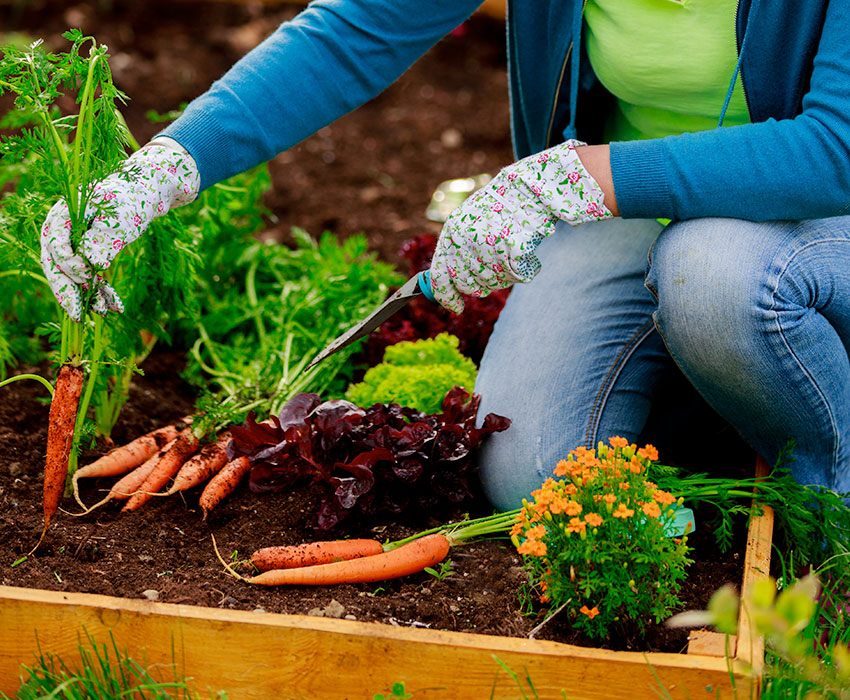

Como se hace un Huerto

Para crear un huerto orgánico, selecciona un lugar soleado con buen drenaje, prepara el suelo con compost, elige qué plantar según tu espacio y clima, siembra o transplanta según las instrucciones, riega regularmente y controla malezas, utiliza abonos orgánicos para nutrir las plantas, controla plagas y enfermedades de manera natural, y cosecha cuando estén listas para disfrutar de alimentos frescos y saludables.
Porque se hace un Huerto
Un huerto se hace para cultivar alimentos frescos en casa, conectar con la naturaleza, practicar la sostenibilidad mediante métodos orgánicos, y proporcionar una experiencia educativa sobre agricultura y biología de las plantas.
Que es un huerto Orgánico
Un huerto orgánico es un área de cultivo donde se producen vegetales, frutas, hierbas u otros productos utilizando métodos agrícolas naturales y sostenibles. En un huerto orgánico, se evita el uso de productos químicos sintéticos como pesticidas, herbicidas y fertilizantes, en su lugar se utilizan técnicas orgánicas como compostaje, abonos naturales y control biológico de plagas. El objetivo principal de un huerto orgánico es producir alimentos saludables y respetuosos con el medio ambiente, promoviendo la biodiversidad del suelo y reduciendo el impacto negativo en el ecosistema.

Huerto Verde
Un huerto orgánico aporta alimentos saludables y libres de químicos, promueve la sostenibilidad ambiental al proteger el suelo y el agua, conecta a las personas con la naturaleza, puede generar ahorro económico y sirve como una herramienta educativa sobre agricultura sostenible.